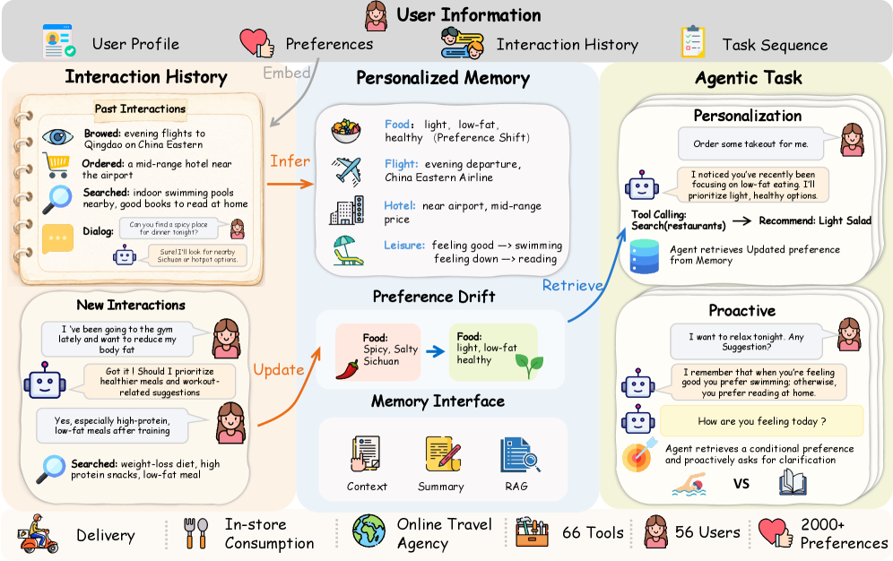
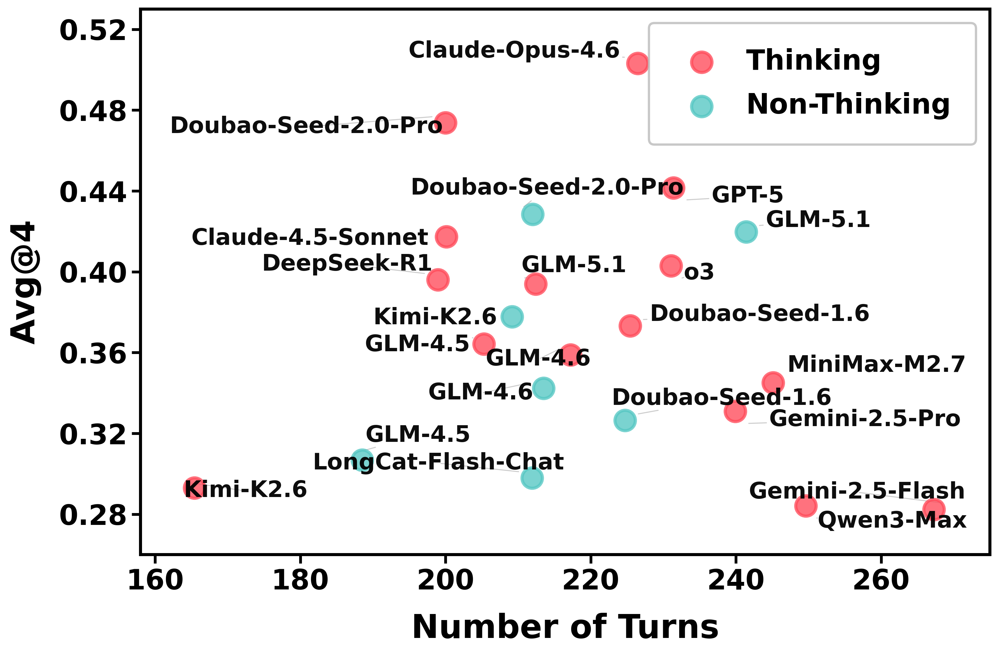
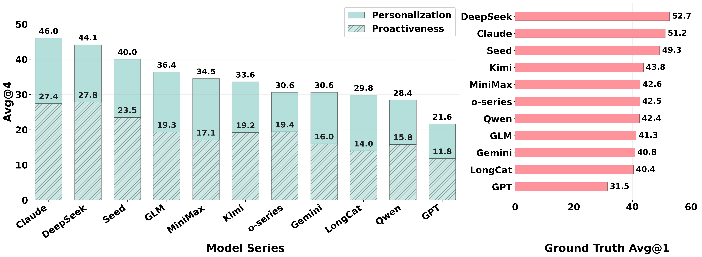
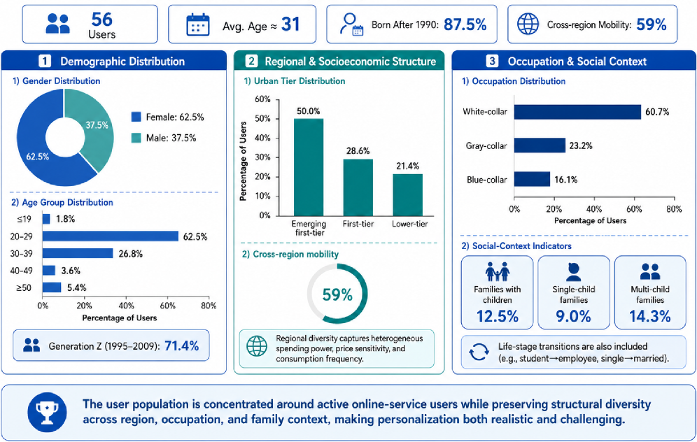

VitaBench 2.0 introduces a benchmark that evaluates LLM agents on personalization and proactiveness in long-term user interactions, revealing that current models fail to infer and leverage implicit user preferences from fragmented daily interactions.
本文提出了VitaBench 2.0基准，专门评估LLM智能体在长期用户交互中的个性化与主动行为能力。实验表明，当前最先进的模型在从碎片化交互中推断和利用隐式用户偏好方面表现不佳，揭示了现有能力与实际需求之间的巨大差距。该基准为记忆机制和个性化策略的开发与比较提供了结构化测试平台。
Deep Note — vitabench2
Key Takeaways - VitaBench 2.0 evaluates agents on personalized and proactive behavior in long-term user interactions, going beyond tool use and reasoning. - Tasks require agents to extract, utilize, and update implicit user preferences from fragmented, temporally ordered interactions. - Proactiveness is tested by requiring agents to recognize missing information and actively acquire it before making decisions. - State-of-the-art LLMs still struggle significantly with real-world personalization, revealing a large gap between current capabilities and practical needs. - Memory mechanisms are essential but often fail to consistently translate stored information into improved task performance.
0) Metadata
- Title: VitaBench 2.0: Evaluating Personalized and Proactive Agents in Long-Term User Interactions
- Alias: vitabench2
- Authors: Yuxin Chen, Yi Zhang, Zhengzhou Cai, Yaorui Shi, Zhiyuan Yao, Chenhang Cui, Jingnan Zheng, Yaqi Huo, Xi Su, Qi Gu, Xunliang Cai, Xiang Wang, An Zhang, Tat-Seng Chua
- arXiv ID: 2605.27141
- Published:
- Links:
- Abs: https://arxiv.org/abs/2605.27141
- HTML: https://arxiv.org/html/2605.27141v1
- PDF: https://arxiv.org/pdf/2605.27141
- Tags: personalized-agents, proactive-agents, llm-benchmark, long-term-interaction, user-modeling
- Domains: ai_safety
- Rating: 5/5 (base 1 + quality 2 + observation 2)
1) Why-read
VitaBench 2.0 introduces a benchmark that evaluates LLM agents on personalization and proactiveness in long-term user interactions, revealing that current models fail to infer and leverage implicit user preferences from fragmented daily interactions.
2) CRGP
C — Context
LLMs have evolved into interactive agents capable of multi-step reasoning and tool use, but existing benchmarks focus on well-specified tasks with explicit instructions. Real-world collaboration requires agents to understand implicit user intent from fragmented interactions and adapt to evolving preferences over time.
R — Related work
- Personalized LLM methods: input-level alignment (retrieval-augmented, profile-based), model-level alignment (parameter adaptation, model factorization), objective-level alignment (personalized reward modeling, multi-objective preference optimization).
- Benchmarks for LLM personalization: LaMP, FOLIO, LongMemEval, etc., but they are mostly passive text-in-text-out settings without tool use or decision-making.
- Benchmarks for LLM agents: ToolBench, WebArena, SWE-bench, etc., which evaluate tool use and reasoning but overlook personalization and implicit user preferences.
G — Gap
Existing agent benchmarks evaluate reasoning and tool use in well-specified tasks where all context is explicitly provided. They fail to assess agents' ability to infer, utilize, and update implicit user preferences from fragmented long-term interactions, and to proactively acquire missing information—capabilities essential for real-world personalized assistance.
P — Proposal
VitaBench 2.0 organizes tasks as temporally ordered sequences for individual users, embedding fine-grained preferences into fragmented dialogues and behaviors. It provides an extensible memory interface to compare memory architectures and evaluates agents on preference extraction, utilization, updating, and proactiveness.
---
4) Experiments
Main results
Benchmarked frontier proprietary and open-source LLMs; results show real-world personalization remains highly challenging even for state-of-the-art models, revealing a substantial gap between current capabilities and practical requirements.
Ablation
Memory mechanisms are essential for long-term user modeling, but existing approaches often fail to consistently translate stored information into improved performance, and different memory designs lead to markedly different outcomes.
Limitations
['The benchmark focuses on simulated user interactions and may not fully capture the complexity of real-world user behavior.', 'The evaluation is limited to the specific task domains and preference types curated in the benchmark.', 'The memory interface, while extensible, may not cover all possible memory architectures or personalization strategies.']
5) Why it matters
- Highlights the critical gap in current agent evaluation: personalization and proactiveness are underexplored but essential for real-world deployment.
- Provides a structured testbed for developing and comparing memory mechanisms and personalization strategies.
- Offers insights into failure modes and capability bottlenecks, guiding future research on user modeling and proactive agent behavior.
6) Next steps
- [ ] Explore memory architectures that better translate stored user preferences into actionable decisions.
- [ ] Develop training or fine-tuning methods that improve agents' ability to infer implicit preferences from fragmented interactions.
- [ ] Extend the benchmark to include more diverse domains and real user data for ecological validity.
- [ ] Investigate proactive information acquisition strategies that balance user burden with task success.
7) Scoring
5/5 = base 1 + quality 2 + observation 2
VitaBench 2.0：评估长期用户交互中的个性化与主动型智能体
主要结论 - VitaBench 2.0评估智能体在长期用户交互中的个性化和主动行为，超越了工具使用和推理。 - 任务要求智能体从碎片化、时间排序的交互中提取、利用和更新隐式用户偏好。 - 通过要求智能体识别缺失信息并主动获取，测试其主动性。 - 最先进的LLM在真实世界个性化任务上仍表现挣扎，暴露了当前能力与实际需求之间的巨大差距。 - 记忆机制至关重要，但现有方法往往无法将存储的信息持续转化为任务性能的提升。
1) 阅读理由
VitaBench 2.0引入了一个评估LLM智能体在长期用户交互中个性化和主动性的基准，揭示了当前模型无法从碎片化日常交互中推断和利用隐式用户偏好。
2) CRGP（背景 / 相关工作 / 差距 / 方案）
背景：LLM已发展为能够进行多步推理和工具使用的交互式智能体，但现有基准聚焦于具有明确指令的明确任务。真实世界的协作要求智能体从碎片化交互中理解隐式用户意图，并随时间适应不断变化的偏好。 相关工作：个性化LLM方法包括输入级对齐（检索增强、基于画像）、模型级对齐（参数适应、模型分解）和目标级对齐（个性化奖励建模、多目标偏好优化）。LLM个性化基准如LaMP、FOLIO、LongMemEval等多为被动文本输入输出设置，缺乏工具使用或决策。LLM智能体基准如ToolBench、WebArena、SWE-bench等评估工具使用和推理，但忽略了个性化和隐式用户偏好。 差距：现有智能体基准在明确提供所有上下文的明确定义任务中评估推理和工具使用，未能评估智能体从碎片化长期交互中推断、利用和更新隐式用户偏好以及主动获取缺失信息的能力——而这些能力对于真实世界的个性化辅助至关重要。 提案：VitaBench 2.0将任务组织为单个用户的时间排序序列，将细粒度偏好嵌入碎片化对话和行为中。它提供可扩展的记忆接口以比较记忆架构，并评估智能体的偏好提取、利用、更新和主动性。
3) 实验
对前沿专有和开源LLM进行了基准测试；结果显示，即使对于最先进的模型，真实世界的个性化仍然极具挑战性，揭示了当前能力与实际需求之间的巨大差距。
消融实验
记忆机制对于长期用户建模至关重要，但现有方法往往无法将存储的信息持续转化为性能提升，不同的记忆设计会导致截然不同的结果。
局限性
该基准聚焦于模拟用户交互，可能无法完全捕捉真实用户行为的复杂性。评估限于基准中策划的特定任务领域和偏好类型。记忆接口虽然可扩展，但可能无法涵盖所有可能的记忆架构或个性化策略。
4) 重要性
- 突显了当前智能体评估中的关键缺口：个性化和主动性在真实世界部署中至关重要但尚未充分探索。
- 为开发和比较记忆机制及个性化策略提供了结构化的测试平台。
- 揭示了失败模式和能力瓶颈，为未来用户建模和主动智能体行为的研究提供指导。
5) 下一步
- [ ] 探索能够更好将存储的用户偏好转化为可执行决策的记忆架构。
- [ ] 开发训练或微调方法，提升智能体从碎片化交互中推断隐式偏好的能力。
- [ ] 扩展基准以包含更多样化的领域和真实用户数据，提高生态效度。
- [ ] 研究在用户负担与任务成功之间取得平衡的主动信息获取策略。




